Akita
a muscular, double-coated dog. Akitas are burly, heavy-boned, quiet and wary of strangers, but share their silly, affectionate persona to familiars.
Browse different dogs that interest you!
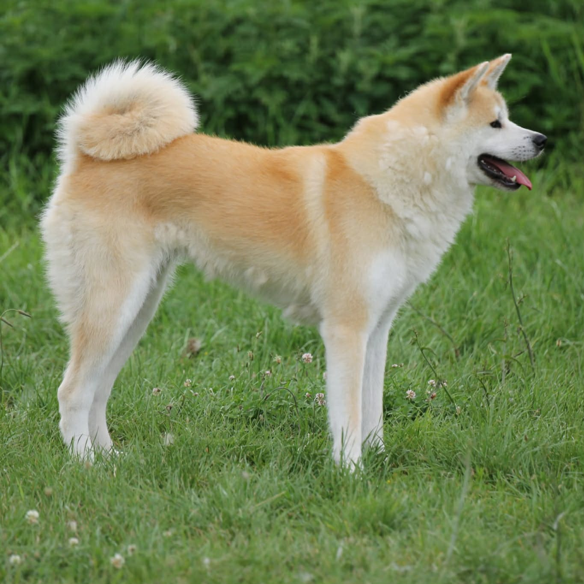
a muscular, double-coated dog. Akitas are burly, heavy-boned, quiet and wary of strangers, but share their silly, affectionate persona to familiars.

well-balanced athletic dog with great strength, agility, endurance, and friendly attitude. Bred to be a utility dog used for working the farm.
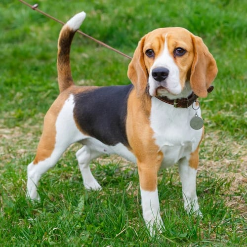
Beagle are exceptional hunting dog and a loyal companion. They were bred to hunt in packs, so they enjoy company. They require plenty of playtime.
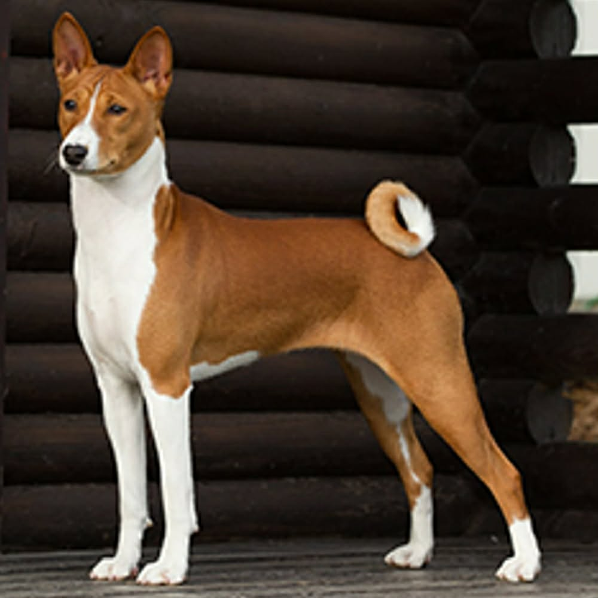
Africa's "Barkless Dog" is compact & intelligent. Recognizable by their shiny short coat and tightly curled tail with almond-shaped eyes. They groom themselves like cats.

Generally shy and suspicious in nature, but once this dog trusts, those behaviors disappear towards it. They have an extreme pack mentality, necessary for survival in the wild.

A clever playmate for kids and an eager walking buddy. Ceskys are muscular, short-legged, and handsome hunters. They train well and want to please.
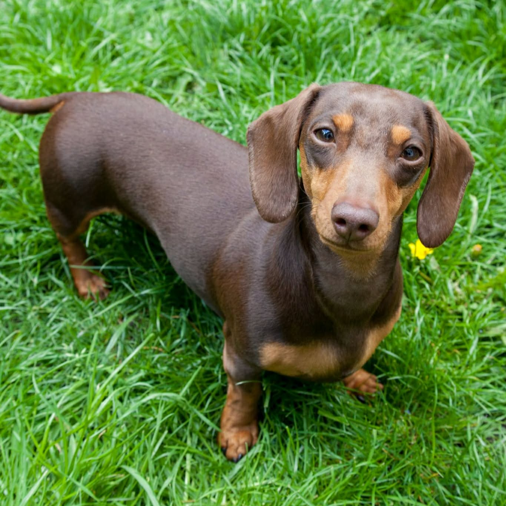
Dachshunds' have a big personality. They are smart and vigilant, bred to be independent hunter of dangerous prey, though they are a bit stubborn.
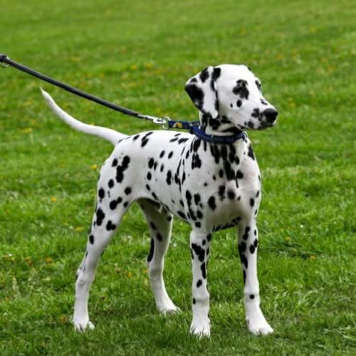
Famous for its spotted coat, often known as a "coach dogs" that accompanies horse-drawn rigs of nobles. Dalmatian's are delightful and eye-catching and are dependable watchdogs.

Upbeat, charming and mellow at home, this compact silky-coated bird dog is admired for its delightful personality.
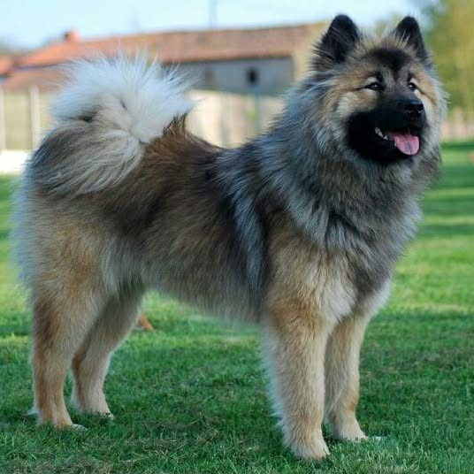
Confident, calm, and well-balanced, and is loyal to the entire family, but not to strangers. Not suitable to be kept in kennels. Comes in a beautiful array of coat colors.

A spirited, small but fearless fox-like spitz. They are lively and affectionate with families, but require exercise and mental stimulation to satisfy their hunting instincts.

Compact yet muscular, boasts a smooth coat and large, distinctive "bat ears" that lend it its alert expression. They are affectionate, social, and do well in homes.

The German Shepherd is intelligent, versatile, and loyal. Excelling in roles such as law enforcement, service work, protection, and family guardianship with a strong drive for training.

Friendly, eager to please, and great with children. A sporting dog that is energetic and requires regular exercise and are know for their retrieving skills, good temperament, and trainability.
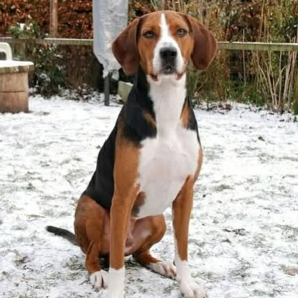
A Swedish scent hound known for its endurance and tracking ability. They tend to be sociable, even-tempered, and good with families, however require space and scent work to stay satisfied.
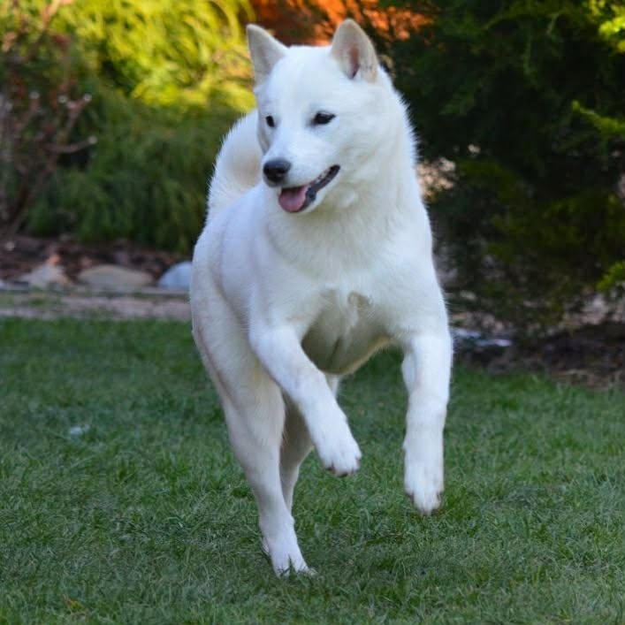
A robust spitz-type dog, originally used for hunting in northern Japan. They are courageous, relatively reserved with strangers, but loyal to family and need firm, consistent training.
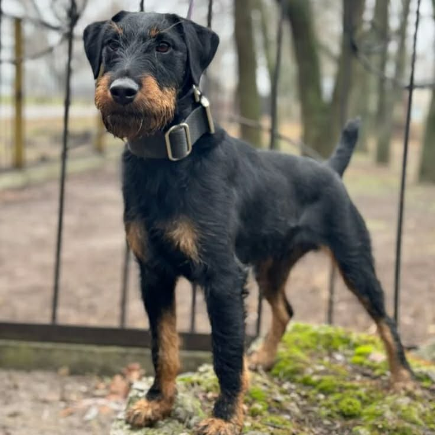
Energetic, bold, and tenacious German hunting terrier. They demand both physical and mental challenge, best suited to experienced owners.

Dignified, strong, and reserved, yet deeply loyal to its family. They are independent and protective by nature, requiring early socialization.
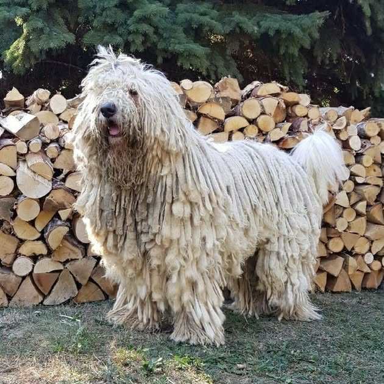
Famous for their "mop-like" coat, Komondors are livestock guardians, brave and protective. They are wise and patient, bonded strongly to their flock or family, but needs early training.
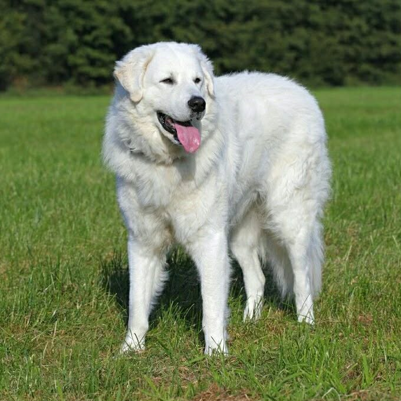
Hungarian guardian breed, they are powerful and independent, bred to protect flocks from predators. They are vigilant and possessive, requiring socialization and strong leadership.

One of the most beloved sporting breeds. Friendly, outgoing, and highly trainable. Excellent in retrieving, assistance, and thrives in social interaction.
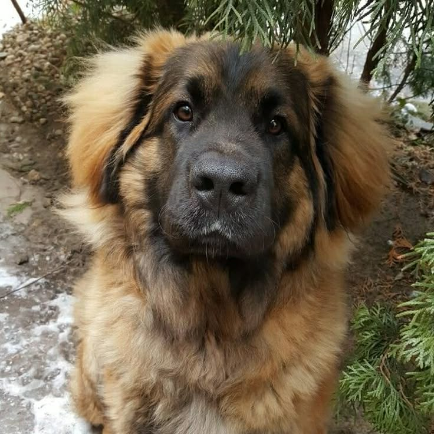
Gentle "giant" dogs combining strength with a mellow temperament. They are sociable, affectionate, and calm in the home, but need space, grooming, and consistency due to their size and coat.
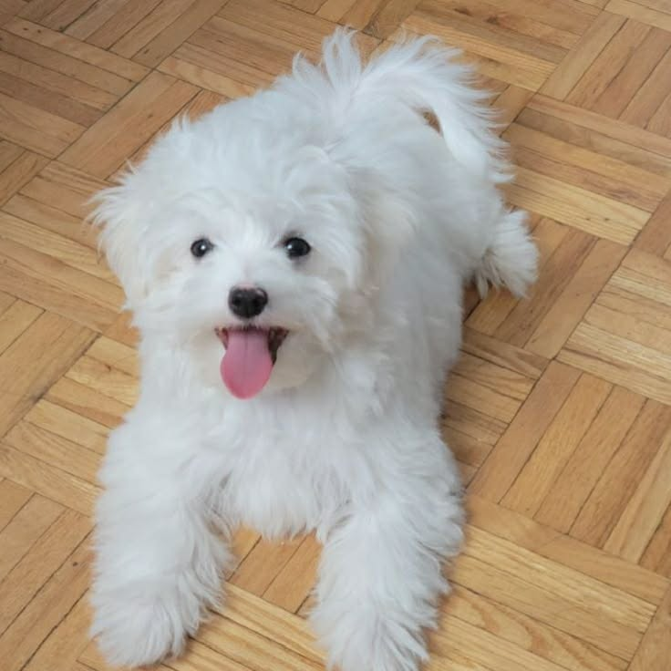
A toy and companion breed. Lively, affectionate, and makes an excellent lap dog. They have a silky white coat that requires consistent grooming and thrives in indoor environments.
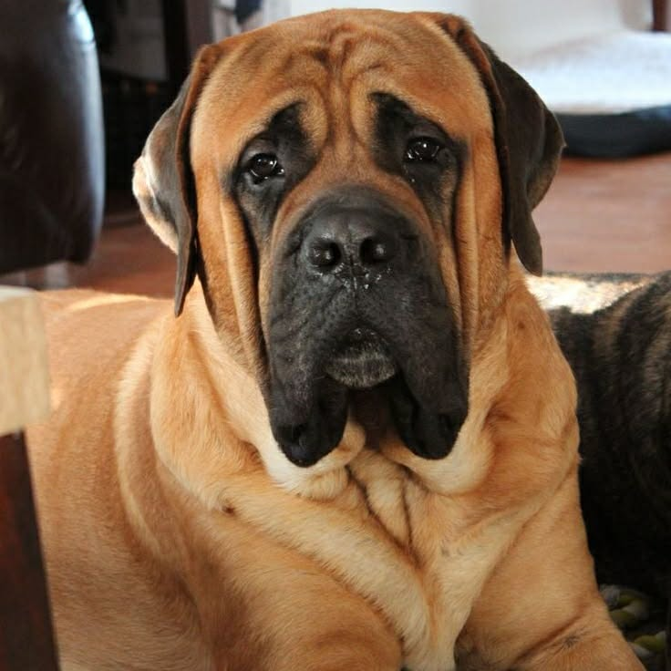
Massive, powerful dogs with a calm and gentle side when properly raised. They are protective yet affectionate, and require early socialization and firm leadership.
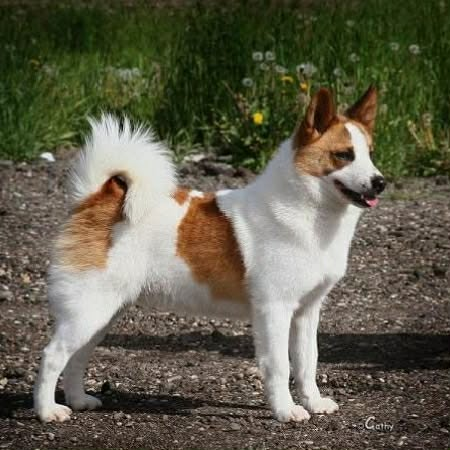
This spitz-type hound is energetic, alert, friendly, and eager, but requires activity, scent work, and mental stimulation to remain well-adjusted.
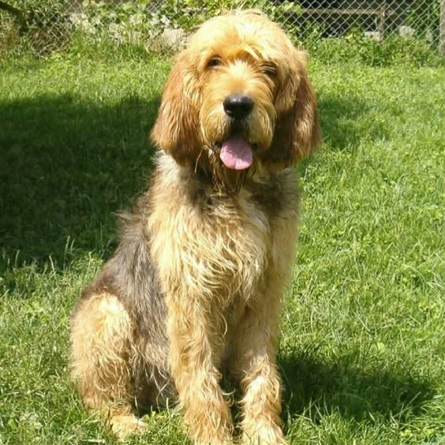
A large scent hound with webbed feet, bred to hunt in marshy terrain. Friendly and sociable, but also busy and independent.
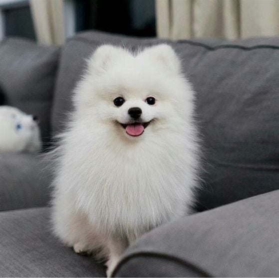
Tiny but bold, the Pomeranian is a spitz toy breed with a fluffy coat and a lively personality. They are intelligent and alert, like miniature watchdogs that require consistent grooming.

An intelligent, energetic, and affectionate dog, bred to herd cattle by nipping heels. They are adaptable family dogs, eager to work or learn tricks.

A powerful working breed. Confident, alert, and protective. When well-socialized and trained, they are loyal family guardians with strength and courage to back their temperament.

Energetic and clever working terriers. They excel at hunting vermin, agility, and enjoy challenges. Requires frequent interaction and mental stimulation to stay satisfied.

A compact, alert Japanese spitz known for its spirited personality and clean grooming habits. They are independent and loyal to their family.
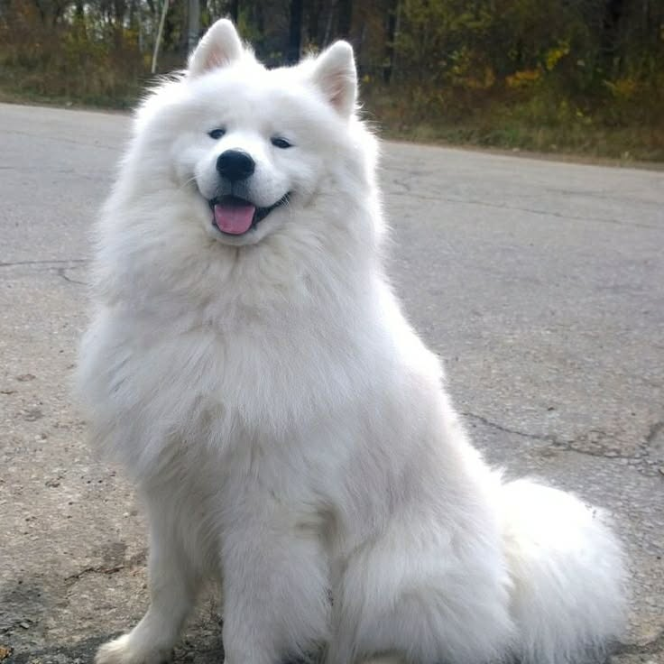
Recognizable by their "smiling" expression and thick white coat, Samoyeds are friendly, social, and gentle. They are working dogs with endurance and love for activity.
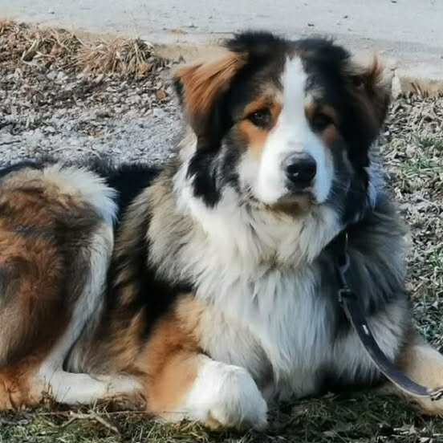
A Croatian/Bosnian livestock guardian breed. It is calm, steady, and protective by nature. They are tolerant with family but wary of threats.
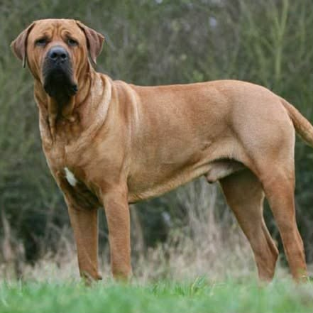
A rare Japanese fighting dog. Muscular and dignified, requiring dedicated, experienced ownership.
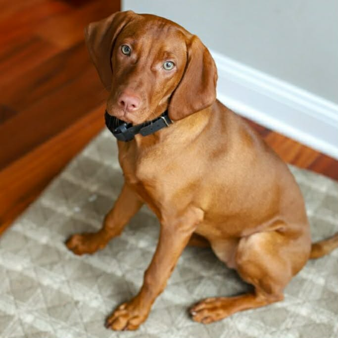
A Hungarian sporting breed, the Viszla is graceful, versatile, and affectionate. Excels in field work, agility, and obedience, needing plenty of exercise and companionship.

A small Italian spitz. Alert, vivacious, and affectionate. They are good companion dogs, and enjoy stimulation, play, and interactive training.
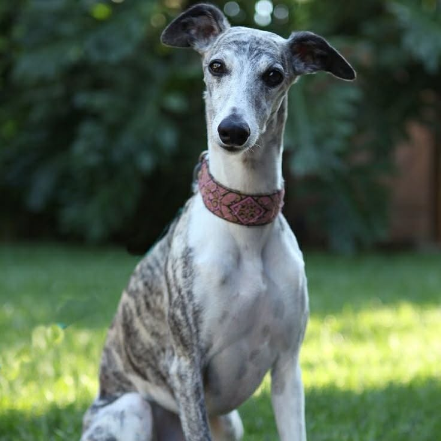
Elegant and fast sighthounds are built for sprinting and graceful movement. They are gentle, friendly, and quiet indoors, but benefit from running in safe areas to satisfy their speed drive.
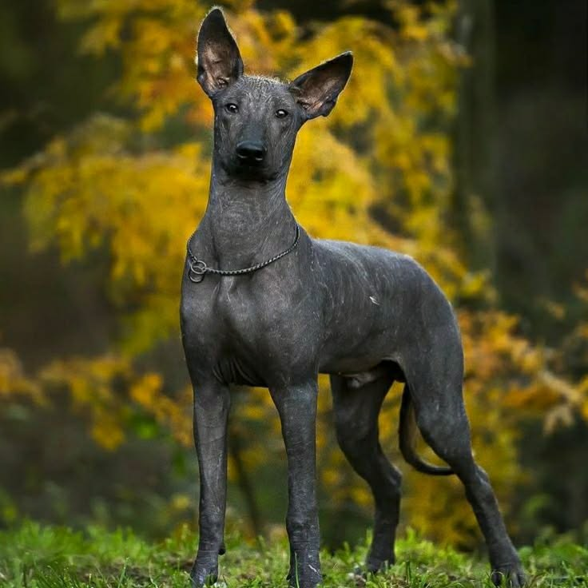
Comes in three sizes and two varieties, this ancient breed is alert, loyal, and often calm in the home. The hairless variety require skin care and sun protection.

Bred for herding, sled pulling, and hunting in Siberia. They are versatile and robust, able to compete in agility and obedience, and thrive on activity.

Small, energetic companion dogs known for their silky coats and confident personalities. They are smart, bold, adaptable to household, but require grooming and mental stimulation to be happy.